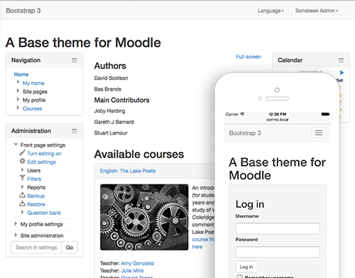

This is the Bootstrap theme for Moodle.
This theme has been created with the help of: Stuart Lamour, Mark Aberdour, Paul Hibbitts, Mary Evans, Joby Harding, Gareth J Barnard
This theme is based on the Bootstrap CSS framework version 3.2.0 It contains all unmodified less* CSS sources from the Bootstrap CSS framework in folder /less/bootstrap. On top of the Bootstrap less CSS sources Moodle CSS is added to create this theme.
This theme works on Moodle 2.6 and Moodle 2.7
This is a Beta theme in development. It does not support: Internet Explorer8 & Right-to-Left laguages
IE9+ Recent versions of all modern browsers
Less CSS is a Object Oriented way of writing CSS code. All Less CSS files for this theme are stored in the /less folder. A developer can use recess to generate the CSS files in the /style folder. For more information read /less/README
This theme only uses YUI libraries. If you would like to used any of the advance Bootstrap3 JavaScript you can create a child theme that requires jQuery
To provide backwards compatibility for HTML5 for Internet Explorer 7 (IE7) and Internet Explorer 8 (IE8) a javascript library call /javascript/html5shiv.js was added. This JavaScript converts HTML tags and CSS into Tag that are understood by IE7 and IE8. The config.php makes sure these libraries are only loaded for IE7 and IE8.
This theme uses the original unmodified version 3.1.1 Bootstrap less files. These are Object Oriented CSS files. The bootstrap repository is available on:
https://github.com/twbs/bootstrap.git
To update to the latest release of Bootstrap remove all files from less/bootstrap, download the new less files and store them in less/bootstrap Inclusion of bootstrap files is configured in less/moodle.less. To generate the new Moodle CSS read /less/README
This theme uses the original unmodified html5shiv.js JavaScript library to enable HTML5 tags in IE7 and IE8. This library is available on:
https://github.com/aFarkas/html5shiv/blob/master/src/html5shiv.js
To update to the latest release of html5shiv download and replace: javascript/html5shiv.js
Authors: Mark Otto, Jacob Thornton URL: http://getbootstrap.com/ License:
Copyright 2012 Twitter, Inc.
Licensed under the Apache License, Version 2.0 (the "License"); you may not use this work except in compliance with the License. You may obtain a copy of the License in the LICENSE file, or at:
http://www.apache.org/licenses/LICENSE-2.0
Unless required by applicable law or agreed to in writing, software distributed under the License is distributed on an "AS IS" BASIS, WITHOUT WARRANTIES OR CONDITIONS OF ANY KIND, either express or implied. See the License for the specific language governing permissions and limitations under the License.
Author: Sjoerd Visscher URL: http://en.wikipedia.org/wiki/HTML5_Shiv, https://github.com/aFarkas/html5shiv License: MIT/GPL2 Licensedc